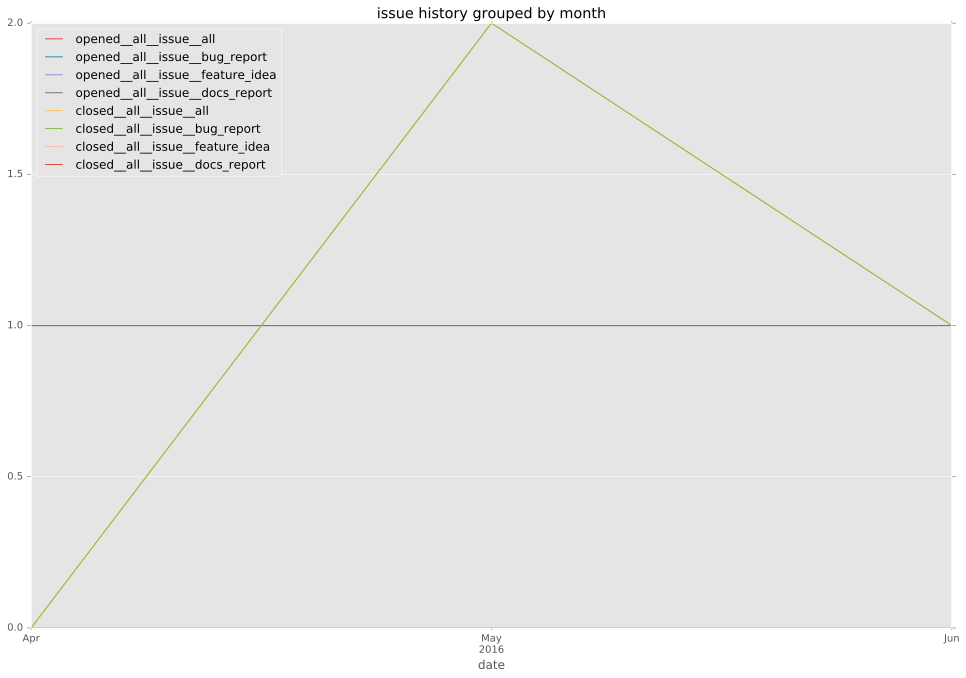
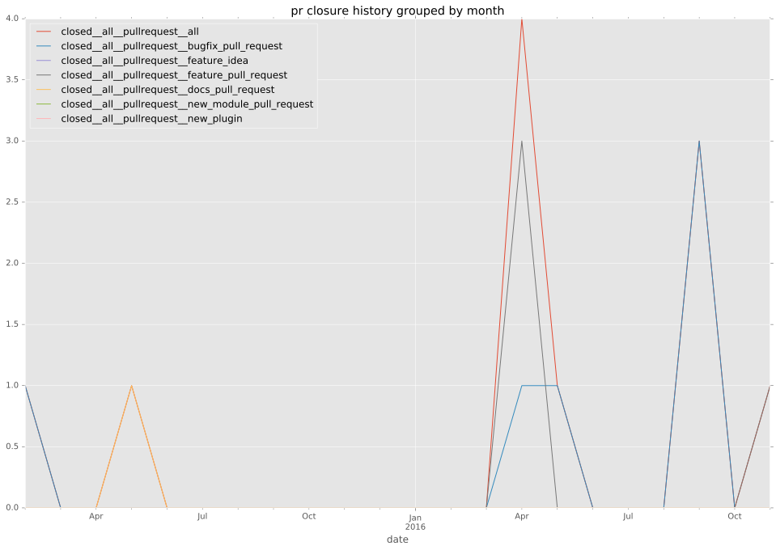

authors
- privateip
maintainers
- privateip
- gundalow
contributors
- privateip : 56 commits
- mikebryant : 8 commits
- wenottingham : 1 commits
- gundalow : 1 commits
- Qalthos : 1 commits
total issue counts
bugfix pull request: 4
feature pull request: 3
pullrequest: 7
issue: 4
bug report: 4
issue history

pullrequest history

days open by issue type
feature pull request
count: 5
std: 3.577708764
min: 0
max: 8
median: 0.0
mean: 1.6
all
count: 16
std: 26.7487538651
min: 0
max: 106
median: 0.5
mean: 11.8125
pullrequest
count: 0
std: nan
min: nan
max: nan
median: nan
mean: nan
bugfix pull request
count: 7
std: 6.16441400297
min: 0
max: 13
median: 1.0
mean: 4.0
issue
count: 0
std: nan
min: nan
max: nan
median: nan
mean: nan
bug report
count: 4
std: 47.2890050646
min: 0
max: 106
median: 23.5
mean: 38.25
closures grouped by total days open